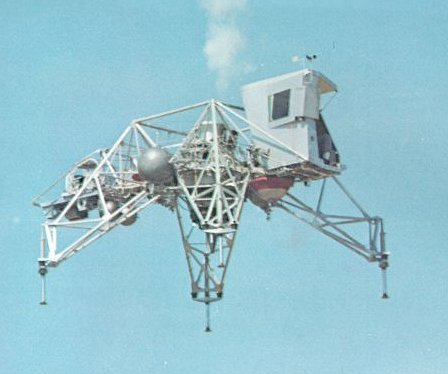

|  |
| The Flying Bedstead, officially the Lunar Landing Training Vehicle, made everyone a bit tense. (The picture below shows Al Shepard beginning a run.) Its jet engine and thrusters gave an excellent feel for landing the LM, but it was cranky, unforgiving, and uncontrollable if allowed to tilt toomuch. |

|